Test report 17 – Stencil font "cad stencil mono"
1 Task and result
Plan 17.4 calls for a custom, very simple monospaced stencil font made of lines and arcs as the default font, with bridges so that no islands fall out. Implemented:
- "cad stencil mono" (Regular, Bold) in
crates/cad-font/src/stencil.rs: 125 glyphs – the whole required character setcad_font::REQUIRED_CHARSwithout fallback, plus’ ” $. Each glyph is a sequence of center lines (lines, tangential circular arcs), drawn with a pen of the stroke width (flat ends, miter), plus dots, minus bridges, trimmed at the baseline and cap line. The contour is computed exactly bycad_kernel::region2(pieces of the lines and arcs); STEP and the kernel see lines and circles. - No holes: every glyph, rendered to a profile, has 0 holes – the counters of O, A, B, D, P, R, 0, 4, 6, 8, 9, Ä, ö, @, %, &, §, °, Ø … are connected to the outside via bridges. Checked in cad-font for 8 combinations of stroke width and bridge width (regions without clockwise loops, closed loops, no slivers, no overlaps) and in the engine for every glyph via
cad_engine::region_2d. - Parameters
text(…, stroke_width = …, bridge_width = …)in mm: stroke width default 0.14·size(Bold 0.2·size), at most 0.2·size; bridge width default 0.1·size, 0 (no bridges – closed counters like a normal font) or 0.03…0.2·size. Values outside: warning at the argument, clamped. With other fonts: warning "wirkt nur mit …" ("only takes effect with …"). - Metrics as for the other fonts: em =
size/0.72, cap height =size(720/1000 em), advance 600/1000 em × 1000/1024 – exactly as JetBrains Mono, so texts stay as wide as with the previous default font. - Default font:
text()withoutfontand with an unknown family uses the stencil font (previously JetBrains Mono); missing characters (e.g. Cyrillic) still come from JetBrains Mono of the same weight. - Along the way: Playwright C16 (axis-constrained dragging, phase B), which recently failed even on its own, is fixed – the cause was in the test (handles of the previous cursor line, section 10).
2 Decisions
| Question | Decision |
|---|---|
| Form of the font | Rust data instead of a font file: per character a small drawing function over named positions (center lines left/right/middle, baseline, x-height, cap height, ascender, descender, depending on the stroke width), building blocks stadium, bowl, C arc, dots, commas. No TTF build, no license question; Wasm growth is code only (section 8). |
| Stroke | region2::stroke (from step 2) with flat ends and miter: right angles stay square, ends are straight cuts (stencil look). Free ends run to the outer line (baseline, cap height), joints end on the center line of the other stroke – so no notches occur. Diagonals (A, K, M, N, V, W, X, Y, Z, 1, 2, 4, 7, /) are extended beyond the line and trimmed at the baseline/cap line (straight feet, flat apexes). |
| Bridges | A bridge is a band of the bridge width across a stroke (length 1.3 half strokes to each side), subtracted from the glyph. Rules: stem separated from the bowl for B, D, P, R, b, d, g, p, q (bridges at the stem), round shapes at top and bottom (O, Q, 0, 8, o), open A (legs at the cap line apart by the bridge width), e and a at the crossbar or at the bowl next to the stem, 4 at the crossbar before the stem, 6/9 diagonally at the bowl, rings (°, %, Ø, @, &, §) on one side. ß/ẞ are open (gap ≥ bridge width to the stem). |
| Parameters | stroke_width and bridge_width in mm (for printing and milling, absolute dimensions are what matters: "bridge at least two nozzle widths"); if not given, proportional to size. Style Bold = default stroke width 0.2·size. The limits come from the test of the parameter space: above 0.2·size strokes of a, e, #, @ grow together and close counters; bridges below 0.03·size are closed again by heavy strokes. |
| Metrics | 1000 units per em, cap height 720, x-height 530, ascender 760, descender −210, advance 600, side bearing 60 (glyph box 480 wide). Vertical text: advance 1000, glyph centered on the pen (as the shaper does for TrueType). |
| Default font and OpenSCAD | OpenSCAD does not know the font (without font it takes the fontconfig default font, usually Liberation Sans): a model without font looks different in OpenSCAD. The compatibility tests do not depend on it (section 9); anyone who needs the same dimensions as OpenSCAD specifies a bundled TrueType font. Unknown families → default font with a warning (previously JetBrains Mono). |
3 Character chart
All 125 glyphs directly from the font (example program cargo run -p cad-font --example stencil_chart): cell = advance, lines baseline, x-height, cap height, descender. A glyph with a hole would be red.
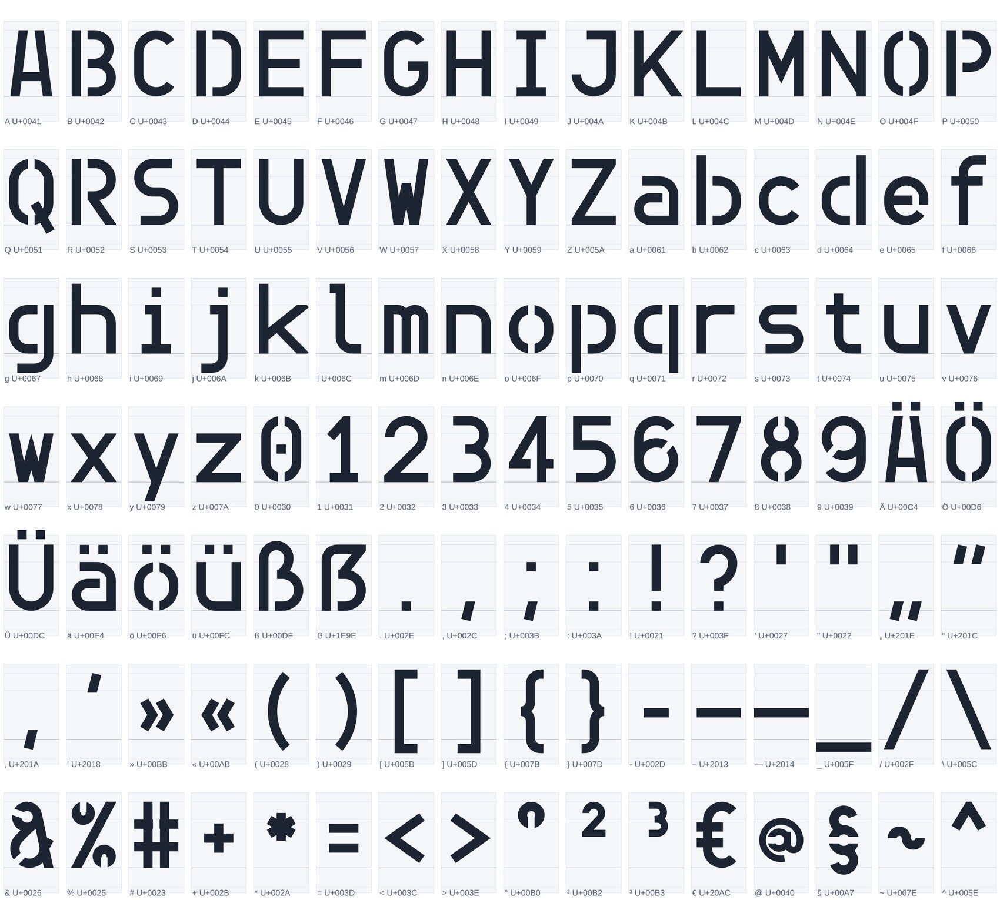
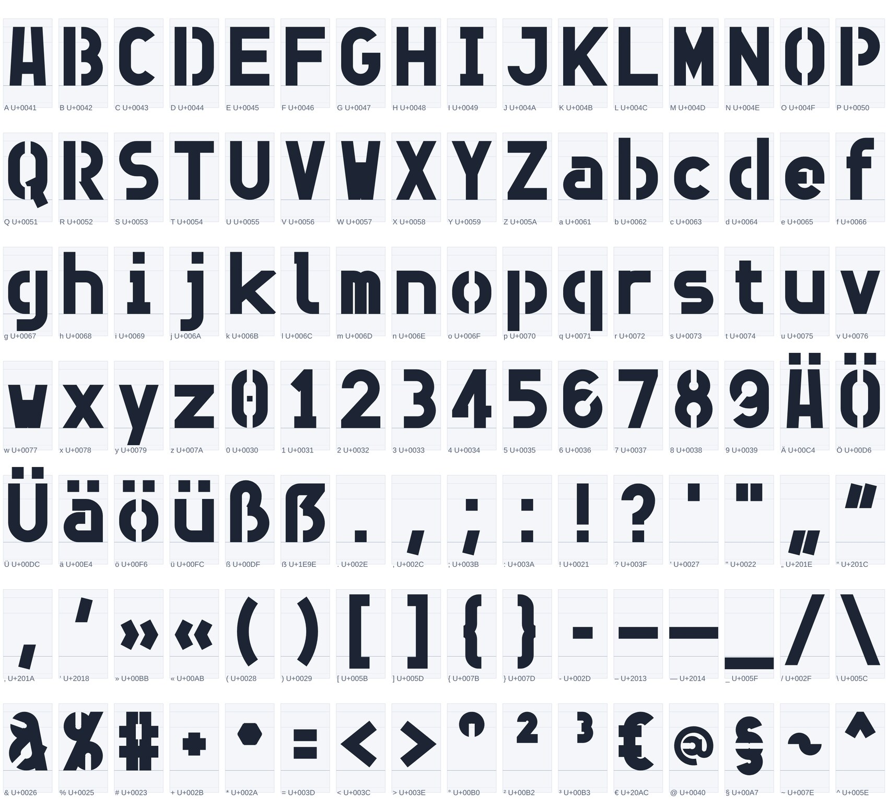
Parts per glyph (Regular): 88× 1 part, 27× 2 parts, 8× 3 parts, 2× 4 parts; holes: Regular 0, Bold 0.
4 Parameters
The same eight characters with different stroke and bridge widths (fractions of size). bridge_width = 0 turns the bridges off: then O, B, 0, 8 … have counters again (red = glyph with a hole, intended here).
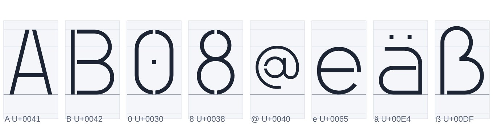
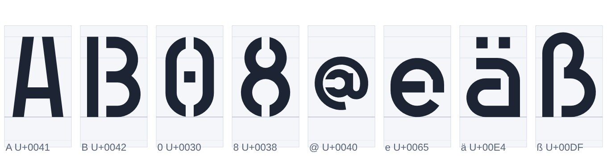
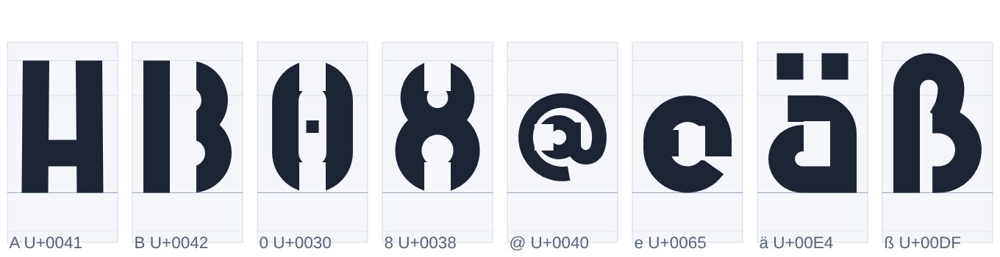
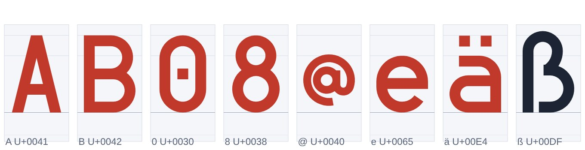
Warnings for values outside the limits and for other fonts:
cases/warn.scad:1:37: Warnung (Auswertung): text: `stroke_width` = 3 mm bei size = 10: höchstens 2 mm cases/warn.scad:1:55: Warnung (Auswertung): text: `bridge_width` = 0.1 mm bei size = 10: mindestens 0.3 mm (oder 0) cases/warn.scad:2:42: Warnung (Auswertung): text: `bridge_width` wirkt nur mit der Schrift „cad stencil mono“ cases/warn.scad:3:18: Warnung (Auswertung): Schrift „Comic Sans“ nicht vorhanden, verwendet wird die Standardschrift cad stencil mono (mitgeliefert: cad stencil mono, JetBrains Mono, Inter, Allerta Stencil; eigene Schrift: font = "datei.ttf") cases/warn.scad: 0 Fehler, 4 Warnungen
5 Comparison with Allerta Stencil
Alphabet charts via the CLI (text(…, size = 8), extruded 0.6 mm, from above): the stencil font has all characters itself; Allerta Stencil (proportional) lacks 20 of them (taken from JetBrains Mono, not stenciled, report 16).
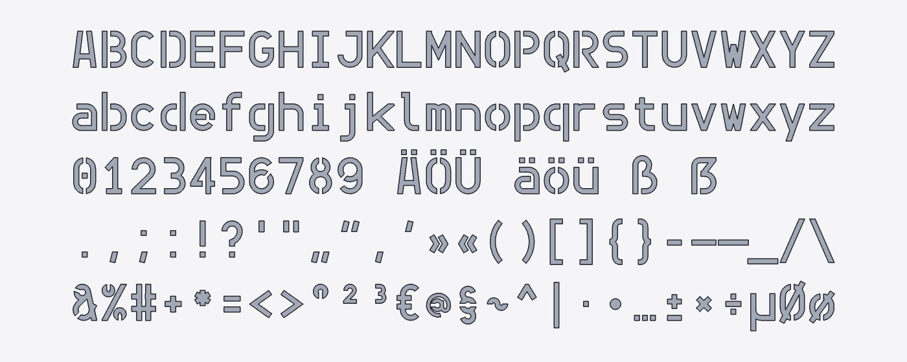
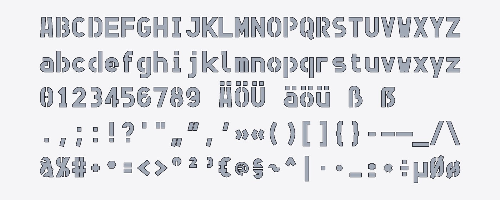
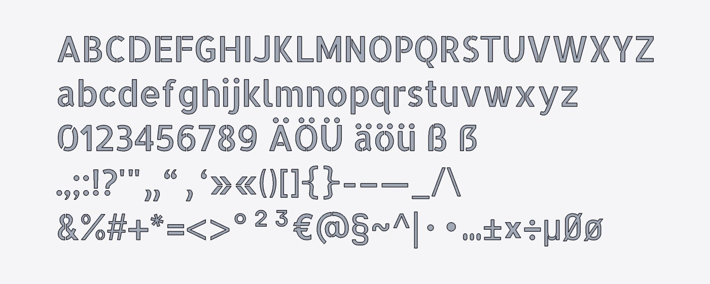
Same sign in both fonts
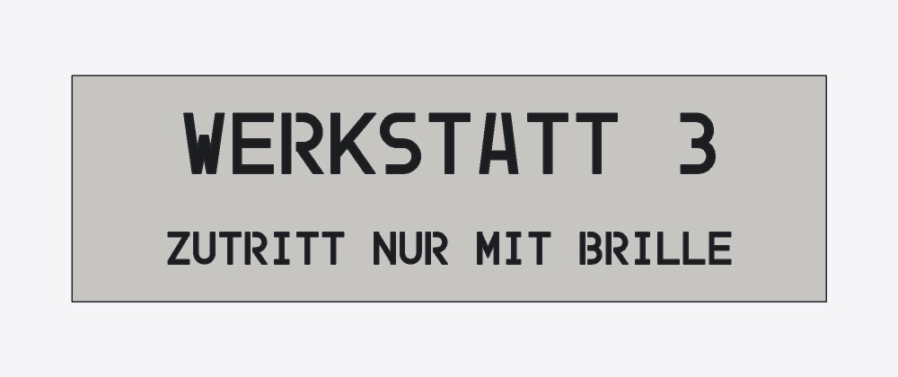
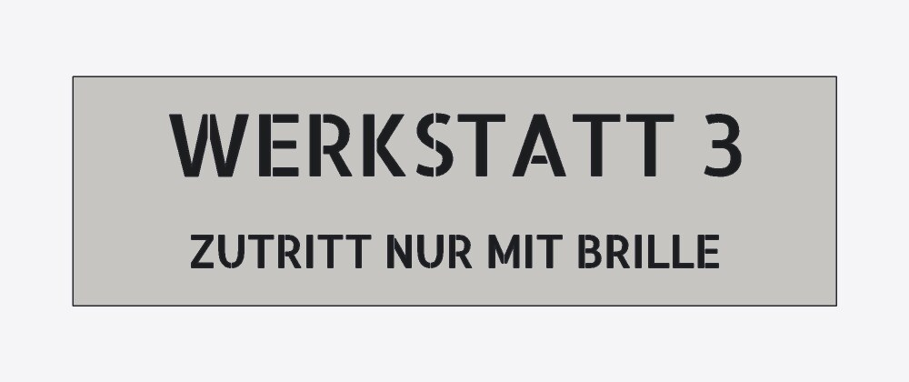
// sign with raised text (report 17): stencil
color("white") cube([100, 30, 2]);
color("black") translate([50, 17, 2]) linear_extrude(1) text("WERKSTATT 3", size = 8, halign = "center");
color("black") translate([50, 5, 2]) linear_extrude(1) text("ZUTRITT NUR MIT BRILLE", size = 4.2, halign = "center");
| Property | cad stencil mono | Allerta Stencil |
|---|---|---|
| Width | monospaced, 0.814·size per character (as JetBrains Mono) | proportional, with kerning |
| Curves | lines and circular arcs (arcs > 90° split in the kernel) | quadratic Bézier curves → one B-spline per flank |
| Required character set | complete, all stenciled | 20 characters missing (fallback, without bridges) |
| Stroke, bridge | adjustable (stroke_width, bridge_width), Bold | fixed |
| License | source code of the project | SIL OFL 1.1, Reserved Font Name (unmodified only) |
6 Example: stencil
examples/spec/schablone.scad: text cut out of a 1 mm thin plate. Without bridges the inner parts of A, 0, 8, B, 9 would fall out; with the stencil font they stay attached to the plate.
// Purpose: spray stencil with the default font "cad stencil mono" (plan 17.4, report 17) – the
// text is cut out of a thin plate; the bridges of the font hold the inner parts
// of O, A, B, 0, 8 … on the plate, nothing falls out. Without `font` the stencil font applies;
// `stroke_width` (stroke width) and `bridge_width` (bridge width) in mm, `bridge_width = 0` without bridges.
breite = 120;
hoehe = 44;
dicke = 1;
r = 4; // corner radius
groesse = 12; // cap height
strich = 1.7; // stroke width (default 0.14 · size)
steg = 1.2; // bridge width (printing: at least two nozzle widths)
difference() {
linear_extrude(dicke) offset(r = r) offset(delta = -r) square([breite, hoehe]);
translate([breite / 2, 27, -1]) linear_extrude(dicke + 2)
text("LACK 08", size = groesse, halign = "center", stroke_width = strich, bridge_width = steg);
translate([breite / 2, 8, -1]) linear_extrude(dicke + 2)
text("RAL 9005 B", size = 8, halign = "center", bridge_width = steg);
}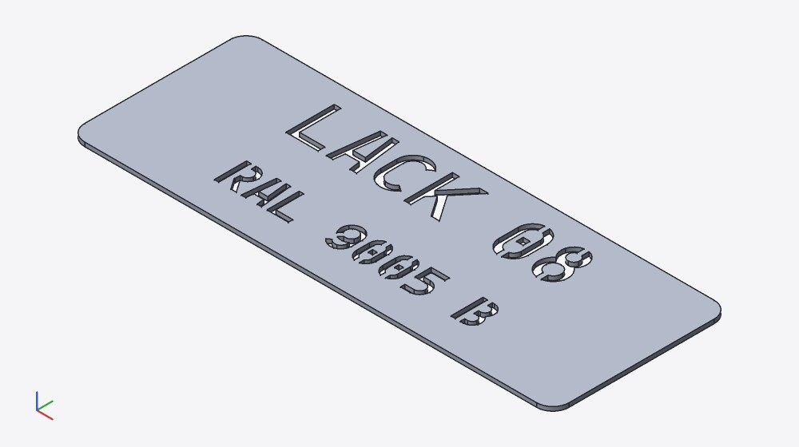
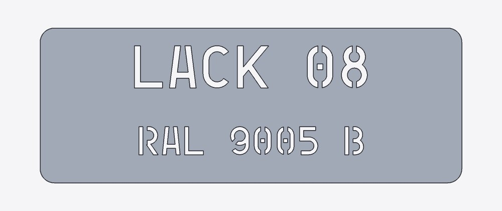
Printed: G-code from PrusaSlicer
A real print is not possible in this environment; instead: STL exported (cad export), sliced to G-code with PrusaSlicer 2.7 (default profile, layer 0.2 mm, nozzle 0.4 mm), and the top layer drawn from the G-code (tools/report/report17-gcode.py): every island of the plate is connected to the rest, the bridges (1.2 mm = 3 nozzle widths) are printed as separate paths.
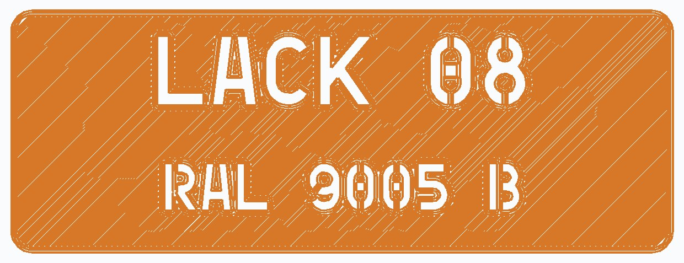
7 How a glyph is built
Example B: stem vline(l, 0, cap); upper and lower bowl as a path from the stem (bowl: crossbar, quarter arcs, crossbar back); three bridges directly to the right of the stem (crossbars top, middle, bottom). region2::stroke turns the paths into bands, miter pieces and ends, region2::combine unites them and subtracts the bridges. Result: stem and "3"-shaped bowl as two closed contours of lines and arcs, without a hole. The positions depend on the stroke width (center line = outer line ∓ half stroke), so cap height and glyph box stay the same for every stroke width.
'B' => {
g.vline(l, y0, cap);
bowl(g, l, r - 0.06 * wd, t, m, (t - m) / 2.0);
bowl(g, l, r, m, b, (m - b) / 2.0);
for y in [t, m, b] {
g.cut(l + h + bw / 2.0, y, 90.0);
}
}
8 Measurements
Kernel time
Release build, cad eval --json without daemon, median of 3 runs; kernel time in ms (all kernel calls). The stencil font needs fewer kernel calls and less time than Allerta Stencil and JetBrains Mono: lines and circles instead of B-splines; its own computation time (regions, cached) is part of the evaluation (language 1.6 ms for the sign).
| Model | cad stencil mono | Allerta Stencil | JetBrains Mono | Stencil / Allerta |
|---|---|---|---|---|
| "Hello World", extruded | 130 (18 calls) | 414 (26 calls) | 417 (20 calls) | 0.31 |
| 40 characters, extruded | 962 (53 calls) | 2,652 (95 calls) | 2,126 (61 calls) | 0.36 |
| Sign: plate ∪ "ZUTRITT NUR MIT BRILLE" (size 4.2) | 1,791 (33 calls) | 3,419 (45 calls) | 2,238 (34 calls) | 0.52 |
Browser (Chromium, SMLib as Wasm, Playwright K03): sign 2,196 ms versus 3,208 ms with Allerta Stencil; "Hello World" 206 versus 463 ms. Stencil example native: 2,609 ms.
Wasm module
| raw | gzip -9 | |
|---|---|---|
cad_wasm_bg.wasm before (commit ed85270) | 4,120,239 B | 1,757,290 B |
| with stencil font | 4,162,774 B | 1,772,667 B |
| growth | 42,535 B | 15,377 B |
Same build (release, wasm-opt -O3) for both states. region2 was already in the module (offset, stroke); only the drawing functions are added.
9 OpenSCAD compatibility
Do the compatibility tests depend on the default font? No: the 36 comparison models (examples/openscad-compat, tests/openscad-compat/projects) contain no text() (grep finds no file), so compare.py and the stage 1 tests (crates/compat-tests) are unaffected; the text comparison with OpenSCAD from report 16 (hull_and_area_like_openscad, report16-openscad.py) names every font explicitly. Run compare.py --eval: 36/36 files match. Intentional deviation: text("…") without font gives the stencil font here and the fontconfig default in OpenSCAD – for identical dimensions, specify a font (plan 17.11, skill).
10 UI
There is no font selection in the UI (fonts are specified in the code; custom ones via "⇡ Load file" (German UI: „⇡ Datei laden“)), so no change there. New scenarios in web/e2e/schablone.spec.ts:
K01 Default font in the browser
The Wasm engine uses the same font as the CLI: cap height = size, advance as JetBrains Mono, umlauts without fallback.
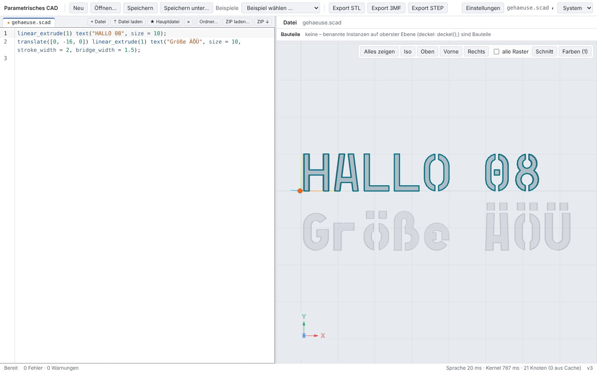
linear_extrude(1) text("HALLO 08", size = 10);
translate([0, -16, 0]) linear_extrude(1) text("Größe ÄÖÜ", size = 10, stroke_width = 2, bridge_width = 1.5);- no messages
- cap height 10 mm, height 1 mm
- width 7–9 cells
- limits and unknown font: warnings
K02 Stencil example
Plate minus text: the inner parts of A, 0, 8, B, 9 are attached to the plate via the bridges.
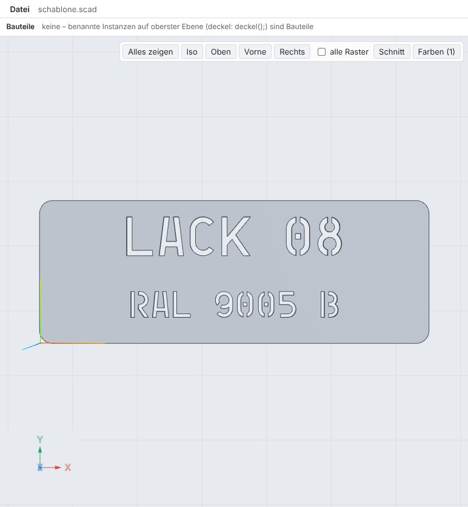
- no errors/warnings
- bounding box 120 × 44 × 1 mm
C16 axis-constrained dragging (report 4) – cause and fix
Since report 15, C16 ran into the test timeout depending on timing, recently also on its own. Cause: after clickLine(2, 3) the viewer rebuilds the handles only in the next animation frame; until then __cad.handles() returns the handles of the previous cursor line. That line holds cube([60, 30, 1]), whose vector is also a point handle – waitHandles("… kind === 'point'") was satisfied immediately, the test took the first handle (the plate corner at x = 1118 px instead of the translate point at 770 px), the drag did not start (drag() = null), the mouse rotated the camera, and waiting for "Achse x" ("axis x") ran until the timeout. The axis selection itself was correct in all runs. Fix in the test: pointHandleOn(page, zeile) waits for the point handle of the line and takes exactly that one (likewise C20, same gap). No test skipped.
before (pnpm exec playwright test e2e/ui-c.spec.ts -g C16, several runs with --repeat-each): 10 of 16 passed, 6 × test timeout (waitForFunction drag()?.axis === 0)
failed run: handle at start of wait {"line":1,"value":[60,30,1],"screen":{"x":1117.7,"y":527.9}} (cube of line 1), drag() = null
after (pointHandleOn): C16 16 of 16, C20 8 of 8 passed (approx. 25 s and 10 s each)
11 Test runs
| Run | Result |
|---|---|
cargo test --workspace --no-fail-fast | 529 passed, 0 failed |
cargo clippy --workspace --all-targets -- -D warnings · cargo fmt --check | clean · clean |
pnpm typecheck · pnpm test (Vitest) | clean · 221 passed |
pnpm e2e (Playwright, Chromium) | 106 passed, 0 failed |
tests/openscad-compat/compare.py --eval | 36/36 files match |
New or changed Rust tests (13):
every_glyph_profile_has_no_holes ok · extruded_text_volume ok · sign_text_kernel_time_like_allerta ok · text_stencil_parameters ok · text_profiles_and_fonts ok · tests::font_names ok · tests::stencil_areas ok · tests::required_chars_in_every_font ok · tests::stencil_layout_features ok · tests::stencil_metrics_and_monospaced_advance ok · tests::stencil_without_bridges_has_counters ok · tests::stencil_glyphs_have_no_holes ok · spec_models_stage1 ok
cad-font: coverage (required_chars_in_every_font with both styles), no holes/slivers/overlaps for 8 parameter combinations, closed counters without bridges, metrics (cap height = size, advance = JetBrains Mono, every glyph in its cell), areas (H exact, o against formula, alphabet against JetBrains Mono, stroke/bridge/Bold/size), alignment, directions, fallback, font names. cad-eval: default font, parameters, warnings. cad-engine: every glyph as a profile without a hole (Regular, Bold), volume = area × height, kernel time of the sign against Allerta Stencil. compat-tests: example schablone.scad.
12 Limitations
- Design deliberately simple: one stroke width per glyph (only @ with 0.72 times the stroke, ² ³ with 0.75 times), no optical corrections, no kerning pairs (monospaced). W, w, m, @, * become very dense in Bold.
- Parameter limits from the test (stroke ≤ 0.2·size, bridge 0 or 0.03…0.2·size); values in between checked at 8 combinations, not exhaustively. On arcs, a bridge is cut radially straight; its width applies on the center line.
- The font does not compose combining characters (e.g. "a" + U+0308): the character comes from JetBrains Mono. Precomposed umlauts are included.
- Characters outside the scope (Cyrillic, Greek, arrows …) come from JetBrains Mono – without bridges, so they can have holes.
- Glyphs of different characters touch only with
spacing< 1 or with the continuous strokes—,_(across the whole cell as in monospace fonts); then counters can form between glyphs. - Models without
fontlook different in OpenSCAD (fontconfig default there).